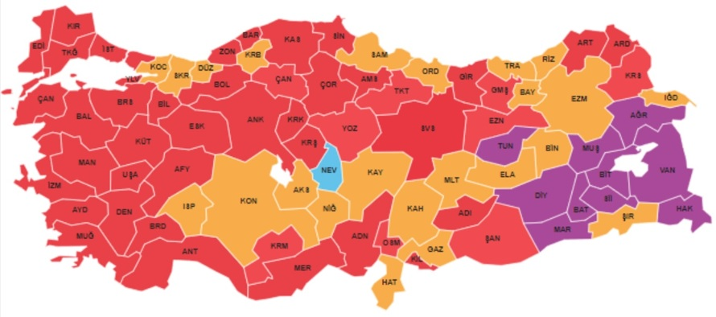

Seçim Değil İhtilal
Dün gece muazzam ve müthiş bir geceydi. 31 Mart 2024 seçimleri ana muhalefet partisi Cumhuriyet Halk Partisi (CHP)’ni deyim yerindeyse iktidar partisi haline getirdi. Tarihin akışı değişti, desek abartmış olmayız. Zira bugünden itibaren Türkiye’de, bölgemizde ve dünyada hiçbir şey eskisi gibi olmayacak. CHP’nin makus talihi, dün gece itibariyle dönmüştür.
Bu seçim elbette çok farklı şekillerle seneler boyu tahlil edilecek ve tez konusu olacak. 22 yıllık AKP zulmü, dün gece itibariyle sona erdi. AKP Genel Başkanı Recep Tayyip Erdoğan partisi ve zihniyetiyle beraber resmen tarih oldu. Meral Akşener tarih oldu. İyi Parti tarih oldu. Devlet Bahçeli ve MHP tarih oldu. Siyasal islam tarih oldu. Demokratik ve laik düzen kazandı.
Halk seçim yapmadı, resmen ihtilal yaptı; hem de kansız ve silahsız şekilde…
– Şevket Süreyya Aydemir, İhtilalin mantığı
Şüphesiz Şevket Süreyya Aydemir, yukarıdaki tanımı 27 Mayıs hakkında yazmıştı (ihtilalin mantığı kitabı 27 Mayıs darbesini konu edinir). Ama yukarıda alıntıladığım cümle resmen dün gece yaşanan olayın özetiydi.
Peki ne oldu da bu sonuç yaşandı?

Yukarıdaki haritayı sadece CHP’nin başarısı olarak yorumlamak eksik olur. Bu harita AKP ve Recep Tayyip Erdoğan’ın ülkeyi getirdiği bunalım ve çöküşün bir yansımasıdır. Sorun sadece ekonomik bunalım değil. Ellerindeki gücü kullanarak yapmadıkları zulüm kalmadı. İnsanları öldürdüler, işten attırdılar, insanların ekmeğiyle oynadılar, haklarını yediler… Dolayısıyla AHP ve Recep Tayyip Erdoğan bu dersi çoktan hak etmişti. Bütün bu zulümlerin bir sonu gelmeliydi, geldi. Türk Milleti kendisini yoksulluğa mahkum eden AKP’yi ve Recep Tayyip Erdoğan’ın affetmedi.
Dediğim gibi. Bu sonuçlar daha çok yazılıp konuşulacak. Ama artık CHP’nin devri başlamıştır.
Hayırlı ve uğurlu olsun.
Tüm şehirlerimizi geri aldık. Sıra cumhuriyeti geri almakta.